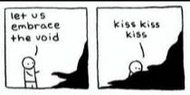

Snacking and my pants size (if I wore them anymore) have jumped up a few notches these past few weeks. There's been lots of mindless all-day filling up, in a way that wasn’t formerly necessary.
Y’know, back in those glorious olden days when humans were free to roam the land.
Apparently quarantine comes with a strong pull to become more... substantial.
It’s not comfort that’s been sought. I am incredibly lucky to have no particular need for comfort these days. Life is good. I have a roof over my head, a car I hopefully remember to start once a week. I get to be both happily alone, and also quite busy with clients and painting and solo-practice dancing and socializing online.
So it’s not as if there’s been no other way to fill the time than to work the ol’ biceps with a strong hand-to-mouth action.
And yet…
Even with all this plenty, in quarantine the sense of deprivation, of not-enough, is strong anyway.
Movement, travel, restaurants, dancing, hugs. There’s no lack of lack these days.
It’s enough to make a girl hungry.
Or pretend she is, anyway. Because no one could eat this much and still be hungry.
So clearly it’s not food that’s wanted.
Perhaps all that chowing is about what is not wanted.
Emptiness.
We humans hate empty. We want to be filled, and ful-filled. Overstuffed and overflowing- even better.
More please.
More food, more wine, more money, more sex, more happiness. More love, health, control, safety, life expectancy, enlightenment.
Just fill ‘er up, dammit.
Attempting to avoid emptiness has become a defining characteristic of being human. Everything we do- addictions, productivity, pleasures, the arts- is an attempt to distract from it.
Every action, even just lying on the couch, attemptss to sidestep emptiness, defining us more, identifying who we are, and narrowing the possibilities of this particular existence.
Which seems to make us very here. And we’re all for that. We’re good with grounded, real, solid.
Just as long as we’re not nothing.
Nothing is bad, n'kay?
And nothing is what emptiness appears to be.
Void, abyss, black hole? No thanks.
So instead, let’s get busy anchoring this self in addictions, feelings, likes, and wants. Pass the tissues, the cookies, the wine.
All of which successfully keeps us from noticing that we also yearn for the wispy not-hereness of nothing.
We long for that peace.
Also.
Great, another thing we don't have enough of.
I mean yes, we don’t want to lose the self, ever. At the same time, the self is the thing we hate, the thing we scan for abnormalities and want to fix. The self is what isn’t good enough and always needs more.
Whereas emptiness is vast and spacious and always, always enough.
So yeah, we want it. We want enoughness. We just think pleasure and filling-up can get it for us.
When it’s actually the lack, the emptiness, that pulls us out of self and connects us with spaciousness. It’s actually the absence of self which provides the fullness and peace that we have so longed for.
I mean, who knew that the sense of self dissolves into the nothing that it is, when it’s not
FED
by pleasure, by seeking, by filling, by more?
So yes, I’m on a diet.
Because emptiness is not empty.
Empty is full of full,
full of wow,
full of vastness,
In a way no chocolate or wine is ever going to satisfy.
Welcome, emptiness.
I’d say, “Pull up a chair,”
but you don’t need one.
Click here to get your every week.
“There's hidden sweetness in the stomach's emptiness.
We are lutes, no more no less. If the soundbox is stuffed full of anything, no music.
If the brain and the belly are burning clean
with fasting, every moment a new song comes out of the fire...
Be emptier and cry like reed instruments cry." --Rumi
